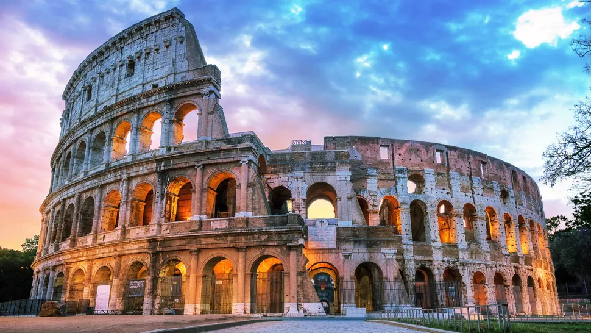

Colosseum
The ancient Flavian Amphitheater was built by the Flavian emperors in 70 C.E. as a gift to the Roman People
The ancient Flavian Amphitheater was built by the Flavian emperors in 70 C.E. as a gift to the Roman People
Walk down the roads of Pompeii. The actual site of where Mt. Vesuvius erupted in 79 A.D. taking many lives and covering everything with ash
Climb up the incredible, tilted tower showing amazing views of the historical surroundings.

Take a charming Gondola ride on the Grand Canal
Volcanic landscape with trails for guided or self guided walks.
Tranquil Trastevere neighborhood is filled with local charm, narrow cobbled streets, and multitude of dinning spots